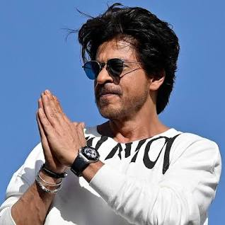

Residence
Shah Rukh Khan resides in Mannat, Mumbai, at his iconic mansion facing the Arabian Sea. Furthermore, he owns other properties, including a house in Dubai and a production office in Mumbai.
Family
Shah Rukh Khan, born on November 2, 1965, is the second child of Meer Taj Muhammad Khan, and Lateef Fatima. He has an elder sister, Shehnaz Lalarukh Khan. Shah Rukh Khan's family has a Pathan (Afghan) ancestry.
Schooling
Shah Rukh Khan pursued his education at St. Columba's School in Delhi and later attended Hansraj College for his bachelor's degree in Economics. He then went on to pursue a master's degree in Mass Communication at Jamia Millia Islamia.
Career
In 1992, Shah Rukh Khan made his Bollywood debut with the film "Deewana." He gained widespread fame with successful films like "Dilwale Dulhania Le Jayenge" (1995), "Dil To Pagal Hai" (1997), and "Kuch Kuch Hota Hai" (1998). Known as the "King of Bollywood," he has received numerous awards for his contributions to the film industry.
Philanthropy
Shah Rukh Khan is actively involved in various philanthropic activities. He supports causes related to child health, education, and disaster relief. He established the Meer Foundation, which focuses on empowering women and providing support to acid attack survivors.
Global Recognition
Shah Rukh Khan is not only a Bollywood superstar but also a globally recognized figure. He has been honored with awards like the Padma Shri by the Government of India and the Crystal Award at the World Economic Forum for his leadership in championing women's and children's rights in India.
"Dilwale Dulhania Le Jayenge," "My Name is Khan," and "Chak De! India" are among Shah Rukh Khan's top-rated movies.
Shah Rukh Khan has received numerous awards, including 14 Filmfare Awards, for his outstanding contributions to the Indian film industry.
Besides acting, Shah Rukh Khan has ventured into business, including co-ownership of the Kolkata Knight Riders in the Indian Premier League (IPL) and ownership of the production company Red Chillies Entertainment.
Shah Rukh Khan is happily married to Gauri Khan, and they have three children together: Aryan, Suhana, and AbRam.
Shah Rukh Khan's contributions to the Indian film industry and his global impact have secured his legacy as one of the greatest actors of his generation.